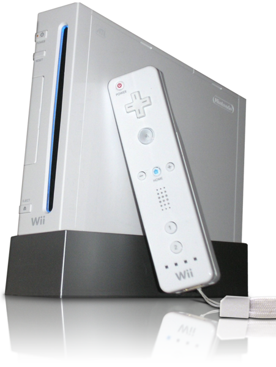

Nintendo Wii, 2006
CPU:
IBM Power PC “Broadway”
729 MHz
GPU:
“Hollywood” (ATI)
243 MHz
RAM:
64 MB unificada
24+3 MB VRAM
Wii Optical Disc
Wii Remote, Nunchuk
Retro-compatibilidade com GameCube
Unidades: 70,93 milhões
Jogo mais vendido: Wii Sports (bundled), Wii Play (unbundled)